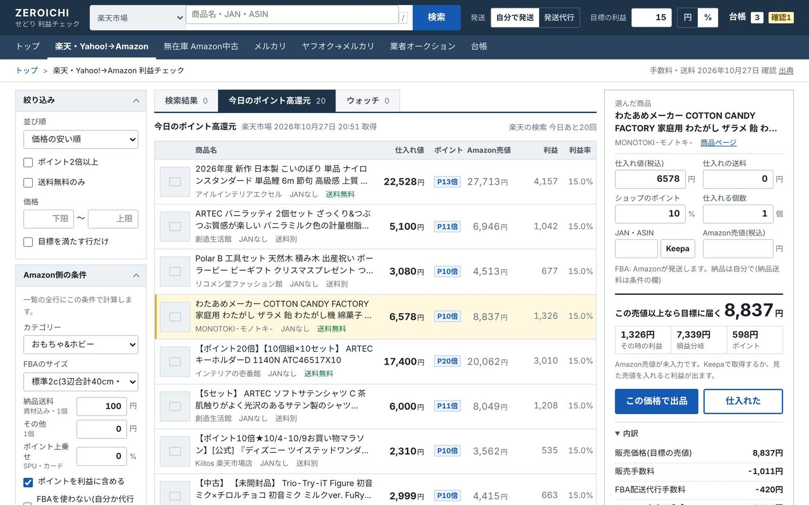
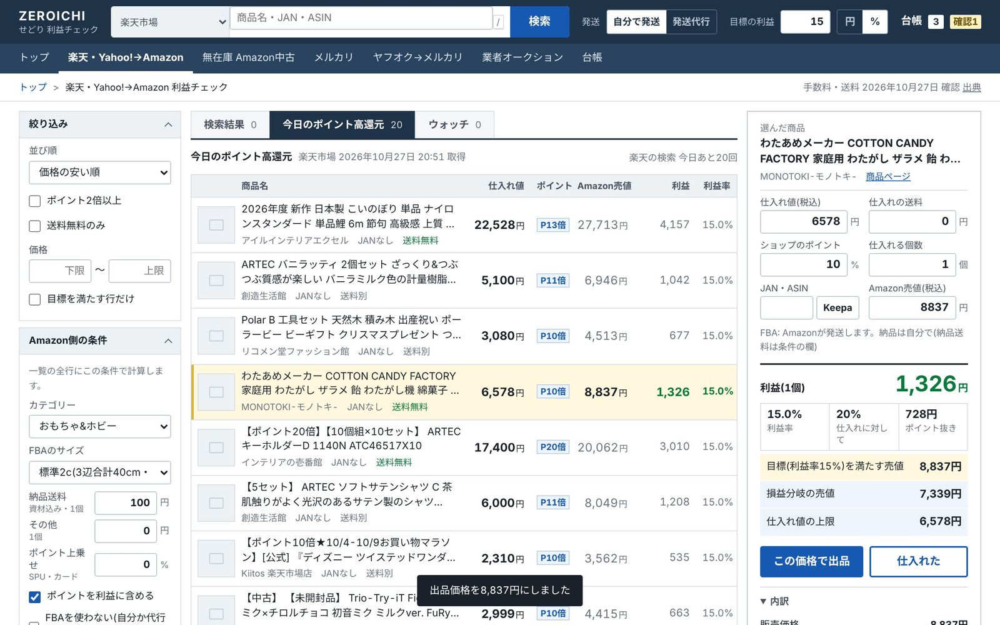
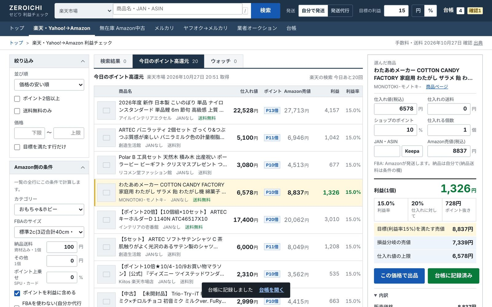
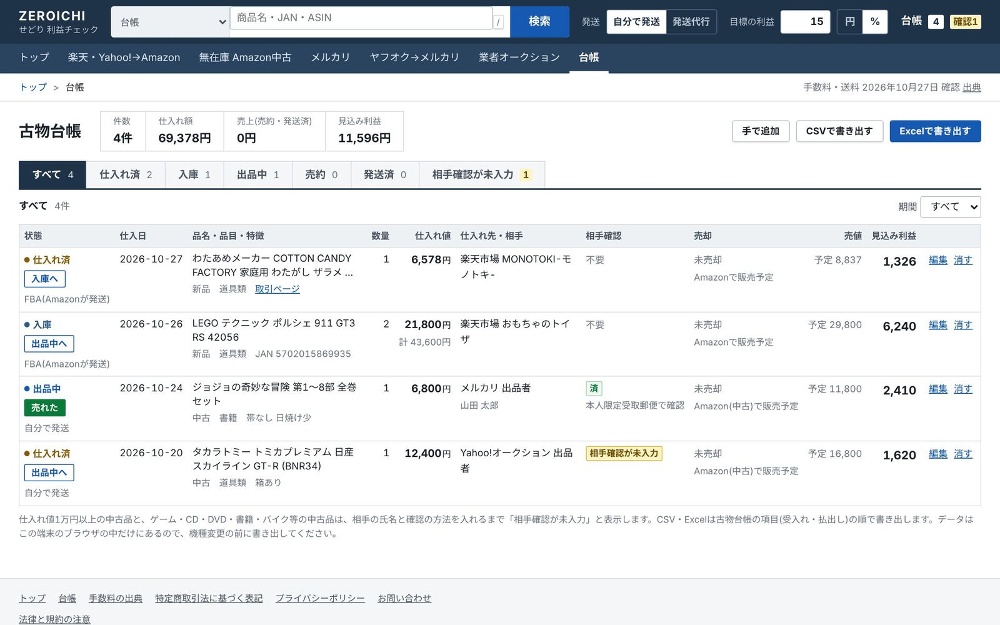
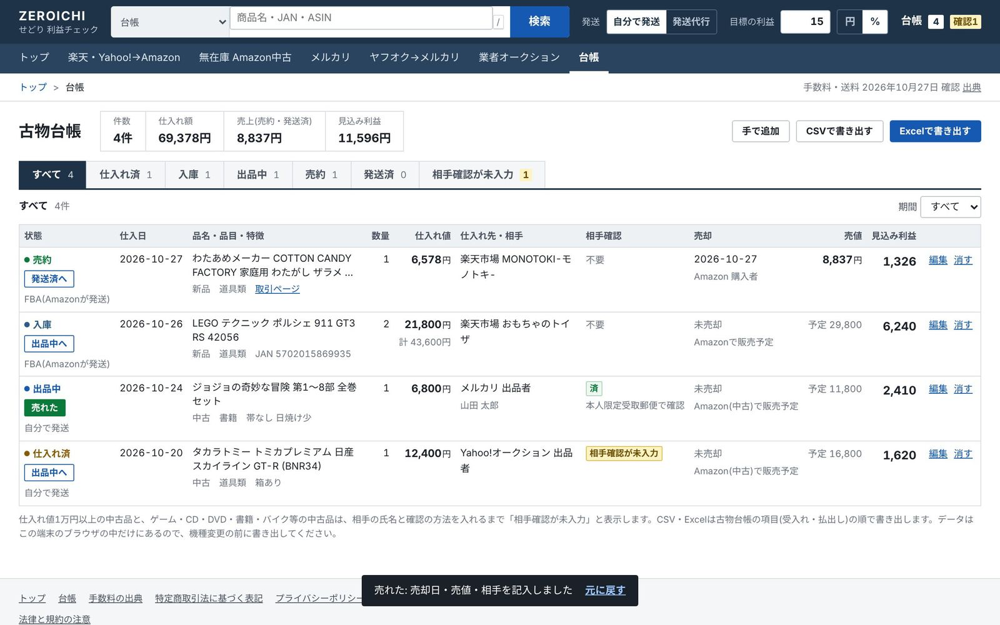
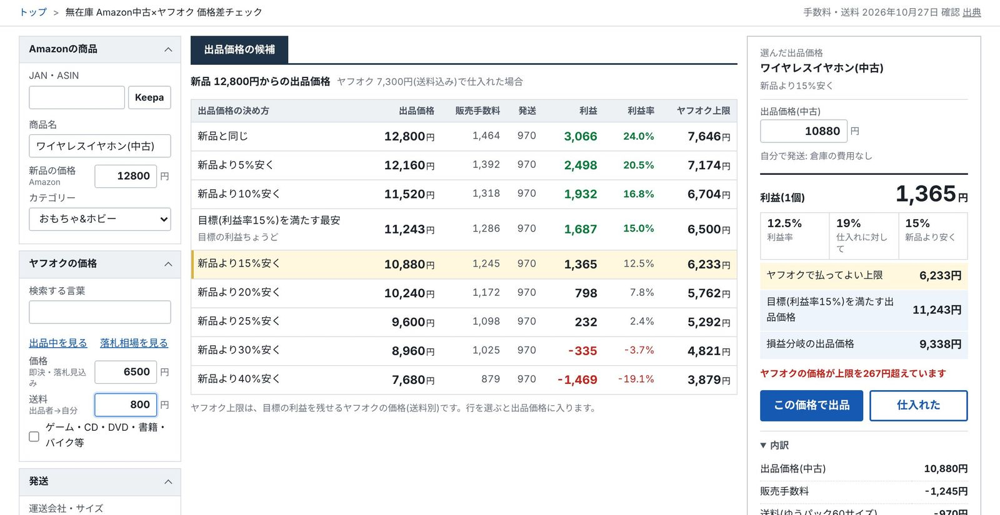
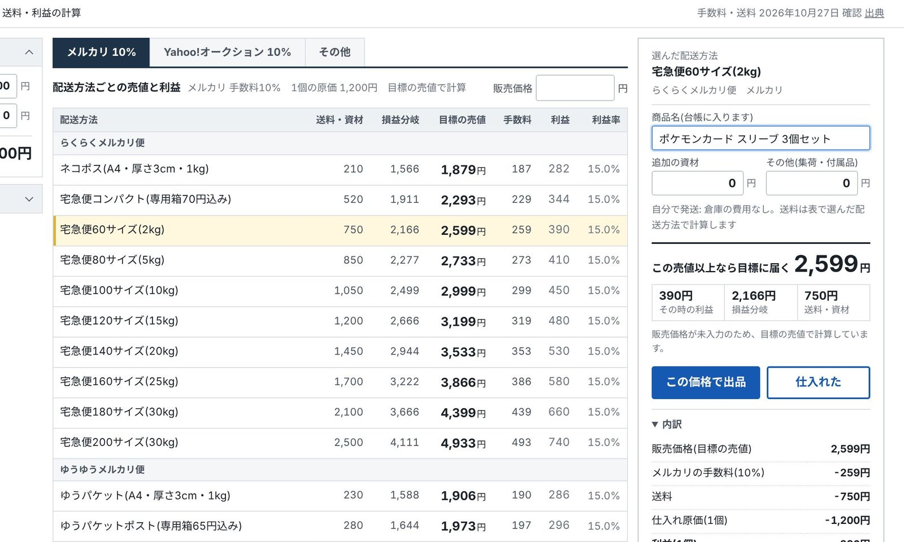
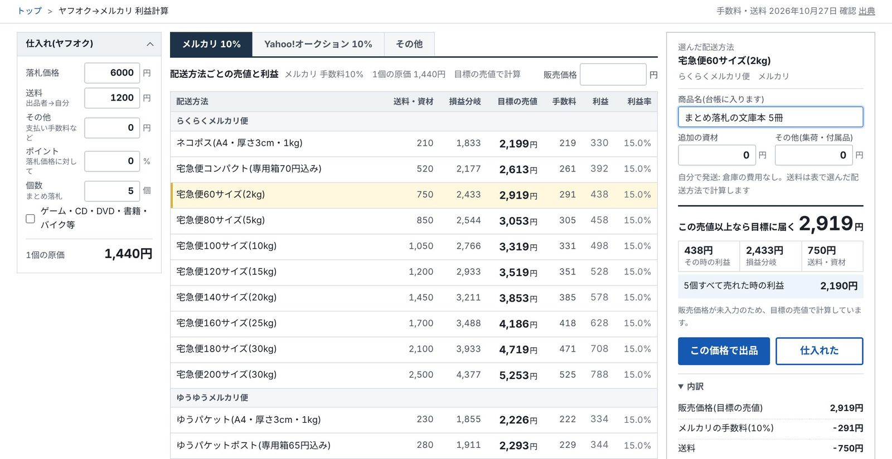
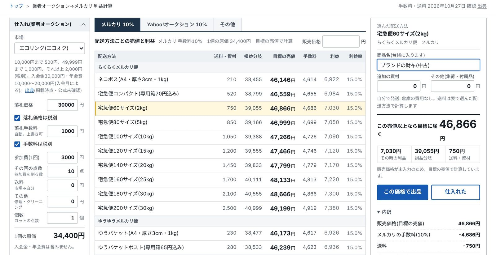
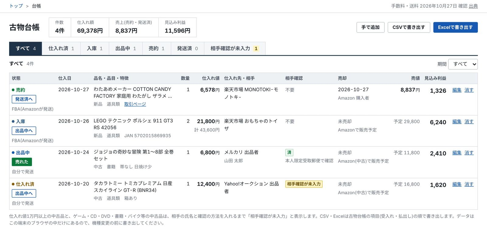

01
ルートごとの手数料で、そのまま計算
楽天・Yahoo!→Amazonはポイント込み。無在庫のAmazon中古、メルカリ、ヤフオクのまとめ落札、業者オークションは落札手数料と参加費まで。それぞれの料金表で、利益・損益分岐・仕入れ値の上限を出します。
せどりの利益計算と古物台帳
手数料・送料・ポイントを引いた利益と、いくらまでなら仕入れていいかがすぐ出ます。「仕入れた」を押せば古物台帳に1行。「売れた」で売却欄まで埋まります。





一覧のどの行にも、手数料・FBA・ポイントを引いた利益が出ます。行を選ぶと、右に内訳が出ます。
01
楽天・Yahoo!→Amazonはポイント込み。無在庫のAmazon中古、メルカリ、ヤフオクのまとめ落札、業者オークションは落札手数料と参加費まで。それぞれの料金表で、利益・損益分岐・仕入れ値の上限を出します。
02
「仕入れた」で古物台帳に1行、「売れた」で売却日・売値・相手まで。月末にまとめて書く手間がなくなります。
03
店頭ではスマホのブラウザでバーコードを読むだけ。アプリのインストールは要りません。目標の利益に届くかをその場で判定し、1タップで台帳やウォッチへ。
円か%で、最初に1回だけ。すべての計算の基準になります。
楽天の検索、今日のポイント高還元、店頭のバーコード。どこで見つけた商品も、同じ画面で計算します。
目標に届く売値と仕入れ上限を見て決めます。押すと古物台帳に1行入ります。
売却欄が埋まります。台帳はExcel・CSVでいつでも書き出せます。




仕入れと売却の記録が、そのまま古物台帳になります。
売上の取り込み・経費・月ごとの利益集計は総合、期末の棚卸と確定申告用の数字の書き出しは業務で使えます(どちらも11月中に追加)。

手数料・送料はすべて、出典のURLと確認日を載せています。いまの確認日は 2026年10月27日。計算は手計算の例73件で検算しています。
出典の一覧Amazon・メルカリ・ヤフオク・日本郵便などの改定を確かめたら、計算と確認日を更新します。公式で確かめられない値は、画面にそう書きます。
無料版の入力と台帳は、お使いの端末の中だけに保存されます。有料プランの台帳はクラウドに保存しますが、中身を見たり、ほかの目的に使ったりはしません。
プライバシーポリシーマイページからいつでも解約できます。次の請求日の前日までに手続きすれば、次の請求はありません。
特定商取引法に基づく表記3つのプランから選べます。どれも14日無料で、その間は業務のすべてを使えます。
まずは台帳をクラウドに残したい方
月2,980円税込
年払いは29,800円(2か月分お得)
おすすめ
売上・経費・利益まで1か所で見たい方
月4,980円税込
年払いは49,800円(2か月分お得)
先着100名は月3,980円(続けている間ずっと)
確定申告まで全部
棚卸と確定申告の数字まで任せたい方
月7,980円税込
年払いは79,800円(2か月分お得)
5つの計算ページと、この端末に保存する台帳は、登録なしでずっと無料です(無料のまま使う)。「11月中に追加」の機能は、追加した日からそのプランで自動で使えます(追加の料金はかかりません)。解約はマイページからいつでもでき、次の請求日の前日までなら次の請求はありません。機能を詳しく比べる
台帳をパソコンとスマホで同じにして、3年分を消さずに残したいだけならライト(月100件まで)。件数を気にせず記録して、売上・経費・月ごとの利益まで見たいなら総合。棚卸と確定申告の数字まで全部まとめるなら業務です。14日無料の間は業務のすべてを使えるので、試してから決められます。
使えます。このアプリが受け持つのは、仕入れ前の計算と古物台帳だけです。出品ツールや価格改定ツールと一緒にお使いください。
何もしなければ、申し込んだプランの月額に切り替わります(ライトは月2,980円、総合は月4,980円・先着100名は月3,980円、業務は月7,980円・税込)。終わる3日前にメールでお知らせします。プランはマイページで変えられます。
マイページの「契約内容」からいつでも解約できます。次の請求日の前日までに手続きすれば、次の請求はありません。解約後も3年間は台帳を書き出せます。
各社が公開している料金表で計算し、手計算の例で検算しています。出典と確認日はページに載せています。計算は目安で、利益や販売を保証するものではありません。
取りません。各サイトの規約に合わせて、検索ページを開き、見た価格を入れる形にしています。楽天だけは公式の仕組みで検索します。
使えます。新品の仕入れ(楽天・Yahoo!→Amazon)や自分の不用品の販売なら、許可なしで始められます。中古品を仕入れて売る場合は許可が必要です。
台帳に、相手の氏名・住所と確認の方法を入れる欄があります。個人から1万円以上で買った中古品など、法律で確認が必要な行は、入力するまで印が付きます。確認のやり方は手引き「中古品を買うときの売り手の確認」にまとめています。
要りません。スマホのブラウザ(iPhoneはSafari、AndroidはChrome)でページを開き、カメラを許可するだけです。ホーム画面に追加すれば、アプリのように開けます。
無料版のデータは端末の中だけにあり、当方には届きません。有料プランの台帳はクラウドに保存しますが、中身を見たり、ほかの目的に使ったりはしません。
次の仕入れから、台帳づけはボタンひとつ。
14日無料で試す